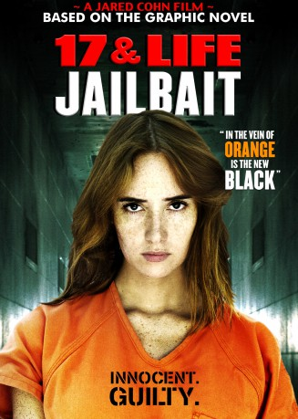

Alternativ: Jailbait
 
 IMDB-Wertung: 4.3 / 10
IMDB-Wertung: 4.3 / 10  Metascore:
Metascore: 
A gritty coming of age thriller about a young girl sent to juvenile prison for the murder of her abusive stepfather. The film follows Anna Nix's journey into the dark world of an all girls jail where she discovers complex relationships, drugs, mental illness, and her eventual search for redemption.
Jahr: 2014
Dauer: 89 Minuten
FSK: 18
Land: USA Studio: Asylum, TheTonspuren: DTS - ,
Untertitel:
Auflösung: 1080p (1920x1080) Größe: 6686 MB
Regisseur: Jared Cohn
Drehbuch: Jared Cohn
Soundtrack:
Darsteller:
Datei: X:\FSK18-2014\Überleben im Frauenknast (2014, FSK18, 1920x1080) 3D.mkv seit 20.09.2017
Festplatte: FSK18
 Es gibt insgesamt 27 Filme in der Gruppe 'FSK18-2014'
Es gibt insgesamt 27 Filme in der Gruppe 'FSK18-2014'